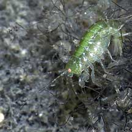
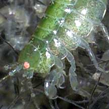
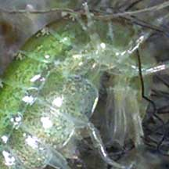
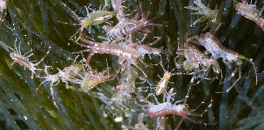
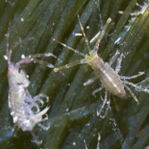
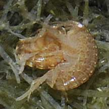
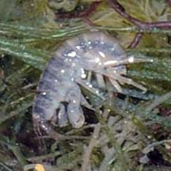
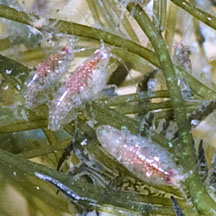

|
|
| amphipods text index | photo index |
| Phylum Arthropoda > Subphylum Crustacea > Class Malacostraca > Order Amphipoda |
| Amphipods Order Amphipoda updated Mar 2020 Where seen? The most commonly encountered are tiny ones in large numbers among seaweeds, especially when there is a bloom of Hairy green seaweed (Bryopsis sp.). What are amphipods? They are crustaceans that resemble shrimps. While shrimps belong to the Class Decapoda, beachfleas and other amphipods belong to the Order Amphipoda. Among the most numerous and most diverse of bottom-dwelling crustaceans, they are sometimes also called amphipods, sand hoppers or sandfleas. While most beachfleas are tiny, one monstrous beachflea (Alicella gigantea) grows to 25cm! Fortunately, we are unlikely to encounter it as it lives at the bottom of the deep sea. Features: 0.5cm or less. Their bodies are flattened sideways (instead of downwards as in isopods). Their eyes are NOT on stalks. They have seven pairs of limbs, the first two pairs may have claws and are used for feeding and in mating. The remainder are walking legs. Amphipoda means 'different feet' while Isopoda meaning 'same feet'. Many can hop long distances by flexing their long abdomens. |
 Kusu Island, May 05 |
 |
 |
| Skeleton shrimps are tiny amphipods that belong to Family Caprellidae.
They have a long skinny translucent body with many limbs. The last
3 pairs of limbs grip stuff while the body extends outwards. Near
the head, a pair of humungous pincers are used to snatch tiny tidbits
and prey. They also have other pairs of limbs near the front used
to grab on to stuff, so they can move like an inch-worm. What do they eat? Most beachfleas are scavengers or feed on detritus. Some are filter feeders. A few are predatory while some are parasites on larger animals. Beachflea babies: Beachfleas mums brood their young in special pouches under their chest. Role in the habitat: Beachfleas are eaten by many animals and are an important part of the food chain. |
 Sisters, May 12 |
 Sisters, May 12 |
| Amphipods on Singapore shores |
On wildsingapore
flickr
|
| Other sightings on Singapore shores |
 Sentosa, Nov 09 |
 Sentosa, Nov 09 |
|
 Sisters, May 12 |
| Andy Dinesh
took a video clip of some amphipods flourescing under black light!
beachflea amphipods @ sekudu - Oct 2011 from SgBeachBum on Vimeo. |
Links
|